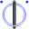
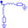
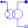
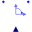

SpacePhasorConnector for Space Phasors |
Information
This information is part of the Modelica Standard Library maintained by the Modelica Association.
Connector for Space Phasors:- Voltage v_[2] ... Real and Imaginary part of voltage space phasor
- Current i_[2] ... Real and Imaginary part of current space phasor
Used in Components (9)
|  |
Modelica.Electrical.Machines.BasicMachines.Components Partial airgap model |
|
Modelica.Electrical.Machines.BasicMachines.Components Space phasor inductor |
|
|
Modelica.Electrical.Machines.BasicMachines.Components Squirrel Cage |
|
|  |
Modelica.Electrical.Machines.BasicMachines.Components Squirrel Cage |
|  |
Modelica.Electrical.Machines.BasicMachines.Components Electrical excitation |
|
Modelica.Electrical.Machines.BasicMachines.Components Permanent magnet excitation |
|
|
Modelica.Electrical.Machines.SpacePhasors.Components Physical transformation: three-phase <-> space phasors |
|
|  |
Modelica.Electrical.Machines.SpacePhasors.Components Rotates space phasor |
|
Modelica.Electrical.Machines.Losses.InductionMachines Model of core losses |